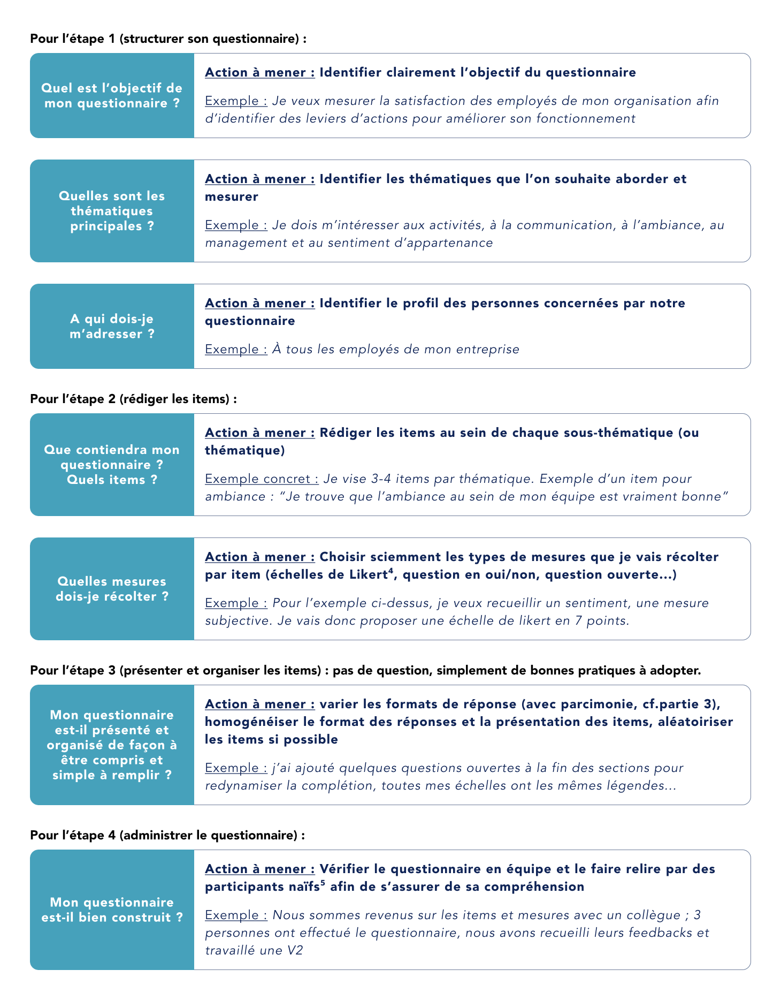
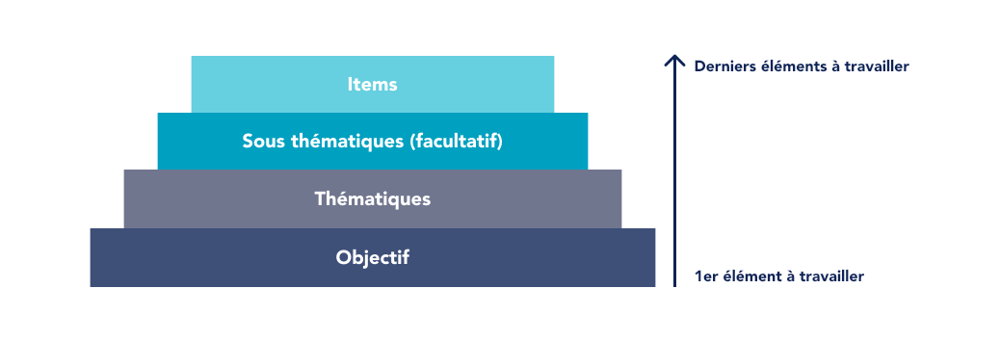
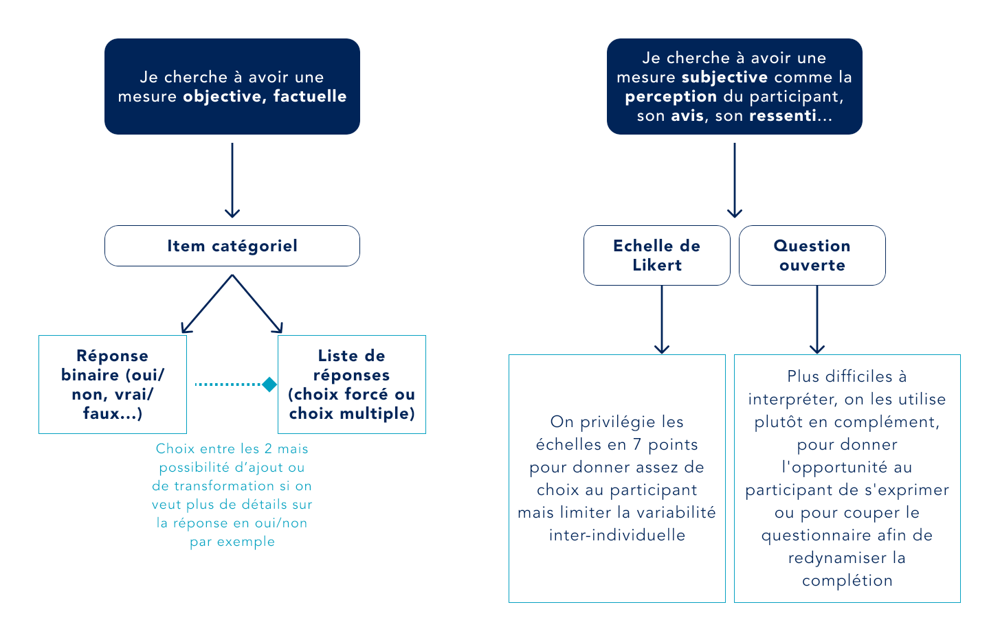
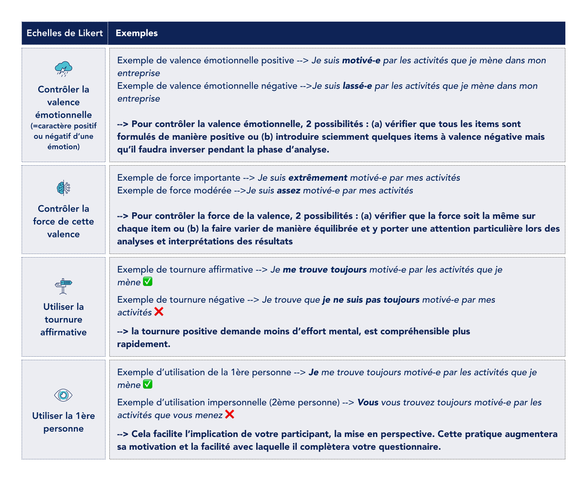
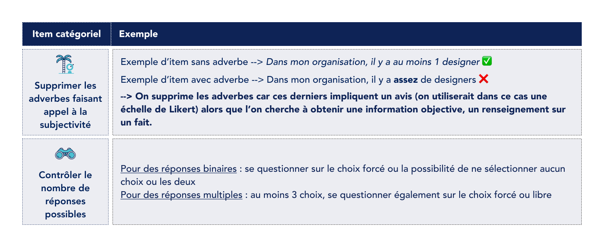
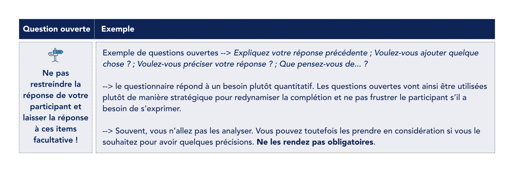
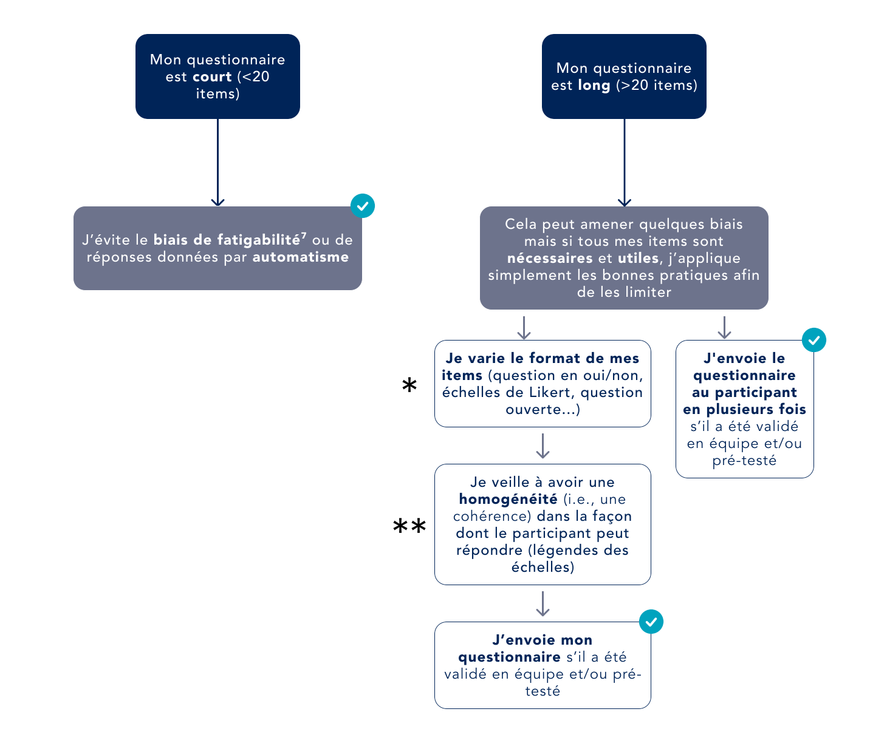

Guide pratique
Comment construire un questionnaire en 4 étapes ?
Identifier des axes d'amélioration, analyser des habitudes, comprendre des comportements... Un questionnaire est un outil puissant, à condition qu'il soit bien construit. Voici un guide en 4 étapes, basé sur une méthode scientifique rigoureuse mais accessible à toute personne souhaitant construire un questionnaire pertinent, solide et exploitable.
Publié pour la première fois en septembre 2022.
Une technique de collecte de données quantifiables
Un questionnaire est une technique de collecte de données quantifiables qui se présente sous la forme d'une série d'items méthodiquement construits et formulés. Il permet d'étudier plusieurs aspects d'un problème. On l'utilise lorsqu'on cherche à obtenir une certaine quantité représentative d'informations.
Grâce au guide proposé dans cet article, vous pourrez :
- Construire un questionnaire avec des items traduisant un objectif de recherche précis (ex : mesurer le bien-être des employés au travail) qui incitent le participant à coopérer et à fournir les informations correctement.
- Obtenir des données exploitables et interprétables en évitant les biais liés notamment au questionnaire lui-même, aux participants, ou aux conditions dans lesquelles on le fait passer.
Qu'est-ce qu'un questionnaire ?
📌 Quoi ?
Un outil permettant de collecter des informations grâce aux réponses ou aux scores de vos participants faisant partie de votre cible.
📍 Où ?
Dans la plus grande majorité des cas, le questionnaire est envoyé en ligne : le participant le complète en toute autonomie et ses réponses sont enregistrées automatiquement.
⏱ Quand ?
À tout moment : au début d'un cycle de conception, en exploration, en delivery pour tester des hypothèses, ou à la fin d'un projet.
🤔 Pourquoi ?
C'est un outil simple d'utilisation permettant de recueillir des informations en quantité, notamment pour comprendre (ex : des utilisateurs, des processus), décrire (ex : des comportements, des préférences) et identifier des leviers d'action.
🔭 Comment ?
Il est fortement recommandé de construire le questionnaire en équipe. Une co-construction à chaque étape (formulation de l'objectif, identification des thématiques, rédaction des items) permet d'éviter les biais.
🔎 Qui ?
Pour la co-construction : le designer peut en prendre la responsabilité, en clarifiant qui se chargera des analyses (spécialiste externe, UX interne...). Pour les personnes qui compléteront le questionnaire : les participants doivent correspondre à votre cible.
Les 6 questions à se poser pour procéder étape par étape
Afin de minimiser les biais, il est préférable de mener les actions suivantes en équipe, ou au moins avec une autre personne. Un biais est une distorsion entre la façon dont nous devrions raisonner et la façon dont nous raisonnons réellement (voir le glossaire pour une définition plus précise). Lorsqu'on fait de la recherche, notamment lorsqu'on crée des outils comme un questionnaire, nos connaissances, notre expertise, le contexte qui nous entoure ou notre état du moment sont susceptibles de venir entraver la validité de ce que l'on mesure, et donc des interprétations et conclusions que l'on en tire. Adopter la démarche scientifique décrite dans cet article permet de minimiser ces biais.

Structurer son questionnaire
Les premières questions à se poser
À quoi va servir notre questionnaire ? Pourquoi construisons-nous un questionnaire ? Votre objectif doit être concret (ex : mesurer la maturité design d'une organisation, obtenir un indicateur de performance récurrent, évaluer le bien-être des employés).
Un objectif concret et clair va vous aider à identifier les thématiques visées. Vous pouvez vous documenter afin d'être guidé(e) et/ou de confirmer vos choix. Vos thématiques - et sous-thématiques si nécessaire - répondent notamment à la question : quelles sont les informations dont j'ai besoin ?
Exemple
Si je souhaite mesurer la satisfaction au travail des employés de mon entreprise afin d'identifier des leviers d'action pour améliorer son fonctionnement :
- Je brainstorme avec 1 à 2 autres personnes sur tout ce qui, selon nous, détermine le bien-être et la satisfaction d'un employé au sein de son entreprise, puis je synthétise ce qui est ressorti de la session.
- J'interroge des experts autour de moi et/ou je me documente en ligne sur les critères reconnus comme facteurs de bien-être au travail, afin de valider, compléter ou modifier les thématiques identifiées « intuitivement ».
L'idéal est de déterminer l'objectif, les thématiques et sous-thématiques de votre questionnaire avant de rédiger les items. Cela permet de limiter un certain nombre de biais a priori et d'éviter de proposer des items non pertinents qui viendraient biaiser le reste du questionnaire.

Il est toutefois tout à fait possible d'adopter une démarche plus exploratoire : on peut commencer par une liste d'items qui nous intéressent, identifier ce que l'on souhaite mesurer, puis mener un travail de suppression d'items non pertinents et de (re)catégorisation a posteriori. Ce guide se concentre toutefois sur la première méthode, plus rigoureuse et permettant un gain de temps significatif : quel que soit l'ordre d'exécution, l'essentiel est de passer par toutes les réflexions et étapes présentées dans cet article.
Rédiger les items
Avant tout : proposez uniquement des items nécessaires et utiles, qui servent l'objectif et répondent à la thématique ou sous-thématique à laquelle ils appartiennent. Évitez de surcharger vos thématiques d'items qui ne seront pas réellement pertinents ou représentatifs de ce que vous cherchez à mesurer.
Il existe 3 grands types d'items utilisables dans un questionnaire : les échelles de Likert (scores de 1 à 7 points), les items catégoriels et les questions ouvertes.

Exemples de formulations selon l'objectif visé

Axes d'attention et de vigilance



Présenter et organiser les items
À cette étape, vous devriez avoir votre objectif, vos thématiques et une liste d'items pertinents et nécessaires par thématique. Il est désormais important de se questionner sur la façon dont vous allez présenter et organiser ces items.

Varier les formats des items
Si mon questionnaire comporte 40 échelles à remplir par exemple, je peux couper la séquence tous les 10 items par une question ouverte. Cela évite de fatiguer le participant ou de le pousser à répondre par automatisme (c'est-à-dire sans réellement lire les items), et redynamise la complétion. Si les objectifs s'y prêtent, j'essaie de varier entre questions en oui/non, échelles de Likert, questions ouvertes et questions à choix multiples.
Veiller à homogénéiser le format de réponse
On cherche à diversifier pour stimuler le répondant, mais à homogénéiser pour faciliter la complétion : on vise la cohérence. Par exemple, sur mes 40 échelles de Likert, même coupées tous les 10 items par une question ouverte, j'essaie de les structurer de sorte que la légende reste la même tout au long du questionnaire : mes scores « 1 » signifient toujours « pas du tout d'accord » et mes scores « 7 » signifient toujours « tout à fait d'accord ».
Trouvez le bon équilibre pour éviter l'ennui et la difficulté de traitement des informations.
Aléatoiriser les items
Lorsque le questionnaire est construit, une bonne pratique consiste à rendre aléatoire, dès que possible, l'ordre de présentation des thématiques mais aussi des items au sein d'une thématique. On supprime ainsi tout biais de fatigabilité, d'ennui ou d'apprentissage.
Par exemple, si votre questionnaire contient 6 thématiques avec chacune 4 items (soit 24 items), il se peut qu'on observe moins de motivation ou de concentration de la part du participant sur la dernière thématique. Les résultats seraient ainsi biaisés. En rendant aléatoire la présentation des thématiques, certains participants verront une thématique donnée dès le début du questionnaire, d'autres au milieu, d'autres à la fin : on supprime alors le biais de fatigabilité.
Exemple de présentation et d'organisation, à faire ou à ne pas faire

La structure / l'organisation : dans l'exemple de droite, les items sont formulés de façon à s'articuler le plus facilement et correctement possible : une seule et même structure de phrase est proposée pour chaque item à traiter.
Les légendes : les légendes sont homogénéisées afin de minimiser la charge cognitive sollicitée. Toutes les échelles de 1 à 7 correspondent à la même évaluation, à savoir le niveau d'accord ou de désaccord.
Les mesures : les mesures sont choisies en fonction des objectifs. Dans l'exemple de gauche, le dernier item correspond à une mesure objective : il aurait fallu proposer un format de réponse en oui/non. Dans l'exemple de droite, on souhaitait évaluer le ressenti des participants (mesure subjective) : le format de réponse en échelle de Likert est donc conservé, mais l'item est reformulé (« je pense qu'il a beaucoup plu cette année ») afin qu'il corresponde réellement à l'objectif.
Administrer le questionnaire : les bonnes pratiques avant l'envoi
a. Solliciter les autres avant de se lancer 🤝
Assurez-vous que le questionnaire a été validé en équipe, ou au moins par une autre personne plus ou moins impliquée dans le processus.
Assurez-vous également qu'il a été prétesté auprès de quelques participants naïfs (ex : des collègues) : est-il compris ? Y a-t-il des points bloquants ou gênants ?
b. Informer vos participants avant la complétion 👀
Si le questionnaire doit être rempli sur la base du volontariat, rédigez un court texte de consentement éclairé (anonymat, utilisation des données...) pour chaque participant. S'il accepte, il accède au questionnaire ; s'il refuse, il ne le remplit pas.
Avant ou dans ce texte, informez le participant des objectifs du questionnaire et de sa forme. Par exemple :
« Ce questionnaire vise à mesurer le bien-être des employés au travail. Il sera composé d'une série d'items divisés en thématiques. Pour chaque affirmation, vous devrez dire à quel point vous êtes d'accord ou non avec celle-ci. Il n'y a ni bonne ni mauvaise réponse, vous êtes libre de répondre ce que vous souhaitez. »
De plus, certaines thématiques abordées peuvent être considérées comme « sensibles » (ex : santé, expériences vécues, questions personnelles sur certaines habitudes). Dans ce cas, il est de votre responsabilité de prévenir le participant en amont, avant qu'il se soit engagé dans la complétion, de ce dont il retourne : en toute connaissance de cause, il acceptera ou non de compléter votre questionnaire. À la fin de celui-ci, n'oubliez pas d'ajouter un mot de remerciement pour son implication et son temps.
c. Faire attention à l'éthique 🫵
À quel point le questionnaire doit-il être anonyme ? Ne demandez que les informations nécessaires (ex : profession, âge, genre) pour répondre à vos objectifs et problématiques. Évitez ainsi de récolter des données pouvant être directement reliées à une personne physique (ex : prénom, e-mail).
Toutefois, si le participant veut obtenir ou visualiser ses résultats, vous pouvez lui proposer, de manière facultative et en fin de questionnaire, de renseigner son e-mail, en lui expliquant que cette donnée ne sera pas conservée et sera uniquement utilisée à des fins de partage des résultats.
d. Réfléchir au mode d'administration 📞
Vous pouvez administrer votre questionnaire de différentes façons : lors d'un entretien (face à face, seul ou en groupe), sur ordinateur (sur place ou via internet), ou par courrier ou téléphone.
Le choix est libre, mais on cherche à limiter au maximum les interactions sociales, notamment pour éviter le biais de désirabilité sociale (la tendance des individus à répondre pour faire plaisir ou pour se donner une image la plus appréciable possible). Conseil si vous administrez le questionnaire en entretien : laissez votre participant seul dans une pièce lors de la complétion. Si plusieurs personnes sont présentes, séparez-les afin que chacune ait son espace.
e. Contrôler le recrutement 🫣
Lors du processus de préparation, vous avez répondu à la question « à qui dois-je m'adresser ? » et identifié votre cible principale. Lors de l'envoi du questionnaire, deux stratégies sont possibles : l'envoyer de manière contrôlée aux personnes respectant vos critères cibles, ou l'envoyer en masse puis contrôler/sélectionner par la suite.
Quelle que soit votre stratégie, il est vivement conseillé d'inclure quelques items en début de questionnaire permettant de caractériser vos participants à partir d'éléments relatifs à votre cible. Ces items ne répondent pas directement à vos objectifs de recherche mais permettent de contrôler ou vérifier que vos participants appartiennent bien à la cible visée : les données de ceux qui n'y appartiennent pas peuvent être supprimées.
Concernant la quantité d'individus à viser, il n'existe pas de seuil exact. Ce nombre dépend de vos objectifs, du nombre de paramètres auxquels vous vous intéressez et du type d'analyse que vous mènerez.
Les notions clés
- Item : énoncé d'une question ou élément utilisé dans le questionnaire. On utilise ce terme général car tous les éléments d'un questionnaire ne sont pas forcément des questions : il peut s'agir d'affirmations pour lesquelles le participant donne son degré d'accord ou de désaccord.
- Participant : la personne qui complète le questionnaire. On parle aussi de « répondant », mais ce guide utilise le terme « participant », comme en recherche.
- Biais : déviation dans le traitement cognitif d'une information, schéma de pensée trompeur et faussement logique. Un biais résulte le plus souvent de l'application d'une heuristique, un raccourci mental qui permet de prendre une décision ou de porter un jugement rapidement, au détriment d'un mode de pensée rationnel et contrôlé. Il rend difficile l'interprétation et la confiance que l'on peut accorder aux résultats d'un questionnaire.
- Échelles de Likert : échelles de scores sur lesquelles les participants se positionnent. Les échelles en 7 points sont les plus pertinentes : elles limitent certains biais, notamment la variabilité inter-individuelle.
- Participants naïfs : personnes à qui l'on demande un retour ou une relecture du questionnaire sans qu'elles aient été impliquées, au préalable, dans le processus de construction.
- Charge cognitive : quantité de ressources cognitives investies par un individu lors de la réalisation d'une tâche. Elle dépend de la complexité de la tâche, des ressources de l'individu et de la manière dont la tâche est présentée. L'objectif est d'éviter la surcharge cognitive.
- Biais de fatigabilité : le fait qu'un individu soit fatigable peut engendrer un biais : la fatigue, physique ou psychologique, diminue l'efficience attentionnelle et favorise l'apparition d'erreurs ou d'omissions dans l'exécution d'une tâche, ici la complétion du questionnaire.
Références bibliographiques
- Alwin, D.F., & Krosnick, J.A. (1991). The Reliability of Survey Attitude Measurement: The Influence of Question and Respondent Attributes. Sociological Methods & Research, 20(1), 139-181.
- Maydeu-Olivares, A., Fairchild, A.J., & Hall, A.G. (2017). Goodness of Fit in Item Factor Analysis: Effect of the Number of Response Alternatives. Structural Equation Modeling: A Multidisciplinary Journal, 24(4), 495-505.
- Bernaud, J.L. (2014). Méthodes de tests et questionnaires en psychologie. Dunod.
- Tourangeau, R., Rips, L., & Rasinski, K. (2000). The psychology of survey response. Cambridge University Press.
- Weisberg, H., Krosnick, J., & Bowen, B. (1996). An introduction to survey research, polling and data analysis. Sage.
- Cadet, B. (2016). Fatigue attentionnelle. Dans P. Zawieja (dir.), Dictionnaire de la fatigue (pp. 267-274). Librairie Droz.
- Grimm, P. (2010). Social desirability bias. Wiley International Encyclopedia of Marketing.
- Chung, J., & Monroe, G. S. (2003). Exploring social desirability bias. Journal of Business Ethics, 44(4), 291-302.
- Ma, D. S., Correll, J., Wittenbrink, B., Bar-Anan, Y., Sriram, N., & Nosek, B. A. (2013). When fatigue turns deadly: The association between fatigue and racial bias in the decision to shoot. Basic and Applied Social Psychology, 35(6), 515-524.
- Holgado, D., Sanabria, D., Perales, J. C., & Vadillo, M. A. (2020). Mental fatigue might be not so bad for exercise performance after all: A systematic review and bias-sensitive meta-analysis. Journal of Cognition, 3(1).